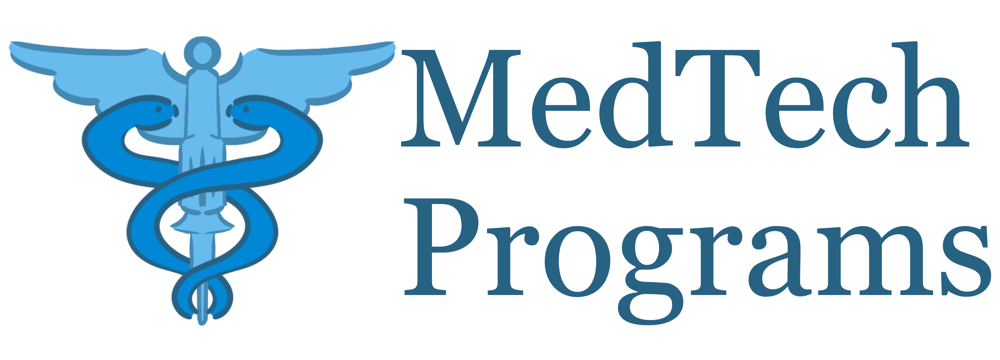

Luciano L. Lorenzana
Welcome to my website, to my very primitive website
My name is Luciano Loma Lorenzana, and I'm a current Pre-Health PostBacc
student at CSU East Bay. I have Bachelor of Science in Computer Science from UC Santa Cruz.
I currently run a site, MedTech Programs, which stores a database of grad programs
within the engineering, bio, and health fields. I also have a GitHub with several
projects and repositories, a few were created for hackathons I've competed in. A few
projects were created as calculators for other classes, not as assignments for the
courses, but to help in the courses with the amount of calclations we had to perform.
During my time as an undergrad student at UC Santa Cruz I've had the opprotunity to work
as a tutor at Cabrillo College for their "CS-19 C++ Programming" course. As a tutor I would hold
tutoring sessions in which I would go over material and concepts from lecture, as well as helping
students in their coding assignments as a group. I would then go onto work as a research assistant
at UC Santa Cruz in the Applied Mathematics department. Under the guidance of Prof. Marcella Gomez
and Doctor Manasa Kesapragada, I would develop GUI features for a medical device, process medical
images, write python scripts to extract, analyze, and plot data from said images.
I also want to add that this website, while it is my portfolio website, I use this to
practice, get familiar, and toy with HTML, CSS, and probably Javascript. My knowledge of
building more sophisticated websites and web applications is via Python with the Dash framework,
which is built on top of the Flask framework. A lot of my experience with web design and web
applications has been for the medical field, research, and the data science space.
| Coding Languages |
Frameworks & Libraries |
Software |
- Python 3.12+
- C/C++ 11+
- HTML/ CSS
- Markdown/ LaTeX
- R
- PostgreSQL (in progress)
|
Python
- Dash
- MatPlotLib
- NumPy
- OpenCV/ cv2
- Pandas
- Plotly
- Scikit-learn/ sklearn
- Tensorflow
- TrackPy
C++
-
I usually create and import
my own data structures and
objects.
|
- Anaconda/ Conda
- Asana
- Autodesk Sketchbook
- CT-Fire/ CurveAlign
- Docker
- Git/ GitHub
- ImageJ/ Fiji
- Jupyter Notebook
- Linux/Unix
- Overleaf Online IDE
- PyCharm IDE
- Render (Web Hosting Service)
- Spyder IDE
- Visual Studo Code IDE
|

Link to Website
NOTE: if the site is taking a while to load or render, don't panic this is
cause the site goes offline due to server inactivty (aka. no one has been using
the site for the last 50 seconds). Just give it some time and it should load.
This site was written in Python using Pandas and the Dash framework,
which are libraries and frameworks that I got familiarized with during my time
as a research assistant at UC Santa Cruz. The Dash framework is used to create
the layout and assets, basically the UI, and Pandas is used to store and organize
the "database" of majors and programs. Since I'm one person working on the site,
I just use a simple .csv file, but I am working on incorporating the database
into an SQL database to more efficiently update data entries.
After attending a pre-health conference in Davis, I was inspired
to create this website to catalogue a variety of grad programs and majors
that combine engineering, biology, and health. The site is an ongoing
project and is open source, the site is neither meant for any type of revenue
or monetization. Since this is also an independent project, there is no
direct association with or endorsement of any university or institution referenced
on the site.
This is more of an app rather than a website. This was my first attempt to
creating my own Dash app. This app is still unfinished as the site was created while
taking my first biology course at CSU East Bay, so the idea was to update the app
as I was going through the course. This project is also a bit of a successor to
another project that I worked on, "Unofficial Chem 1A Calculators" with tools I
developed while taking a chemistry course at UC Santa Cruz.
While the site is not deployed, it is functional, you'll just have to install
Python and the required libraries and frameworks to your machine/computer. There is
even a text file in the repo, "requirements.txt", with a list of the libraries and
frameworks to run the app. The project is currently on hiatus as other projects and
factors in my life are taking priority.
 Link to GitHub Repo
Link to GitHub Repo
NOTE: I want to add that I was in charge of purely the AI backend, any frontend, graphics and images,
and web scrapping were created by my teammates Michael Alaniz, Rudy Chavez, and Kyle Delmo.
This is my team's project from the 2024 CruzHacks Hackathon. My team was known as Key_Caps,
and the team consisted of me, Michael Alaniz, Rudy Chavez, and Kyle Delmo. We developed an app that would
create, in real time, a vareity of meals based on the options provided at the UC Santa Cruz dinning halls.
Depeding on the time of day, breakfast in the morning for example, the user would select a dinning hall
on campus, select their dietary needs, and the app's AI would generate meal combinations for the user. The
AI would also give a vareity of meal combinations, all considerng the user's dietary needs, based on calories,
amount of sugar, and even protein content.
I was in charge of creating the AI for the app. I decided to go with a generative algorithm with a
fitness function, seemed to be the most straightforward solution to generating meal combinations. So when
the user would select their dietary needs, like lactose intolernace, or any food allergy, the AI would
account for those and create plates that are safe for the user's consumption. While the backend AI was
mostly completed, we had issues having the React frontend interacting with the Python backend. At the same time,
since the project was made in roughly two days, the web scrapping would sometimes take a while to execute.